Iran track: markets give a Hormuz deal only 36% by year-end. Polymarket: US–Iran Hormuz agreement 17% by Nov 30 / 36% by Dec 31; senior US–Iran meeting 28% / 44%; Iran leadership change 3.5% / 8.5%; regime falls before 2027 2.6%. Polymarket, Nov 7, 2026 7:10 AM ET. Source: https://polymarket.com/event/us-iran-hormuz-agreement-byptptpt-20260803235957575
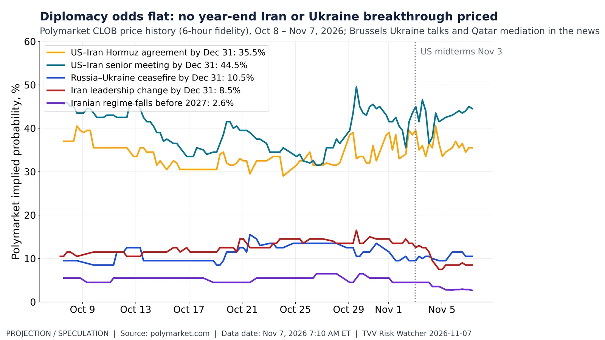
Diplomacy odds flat: no year-end Iran or Ukraine breakthrough priced. Polymarket 6-hour price history since Oct 8: Russia–Ukraine ceasefire by Dec 31 9.5% → 10.5%; Hormuz agreement 37% → 35.5%. Polymarket CLOB, Nov 7, 2026 7:10 AM ET. Source: https://polymarket.com/event/russia-x-ukraine-ceasefire-by
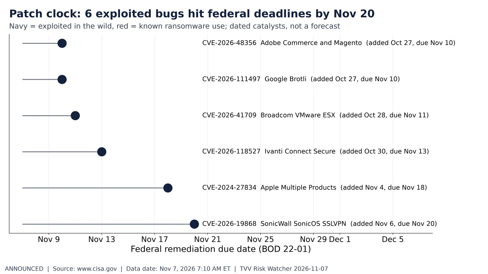
Patch clock: 6 exploited bugs hit federal deadlines by Nov 20. CISA KEV dueDate (BOD 22-01) between Nov 7 and Dec 5, 2026: 6 entries, 0 ransomware-linked. Top vendors: Adobe 1, Google 1, Broadcom 1, Ivanti 1. CISA, Nov 7, 2026 7:10 AM ET. Source: https://www.cisa.gov/known-exploited-vulnerabilities-catalog
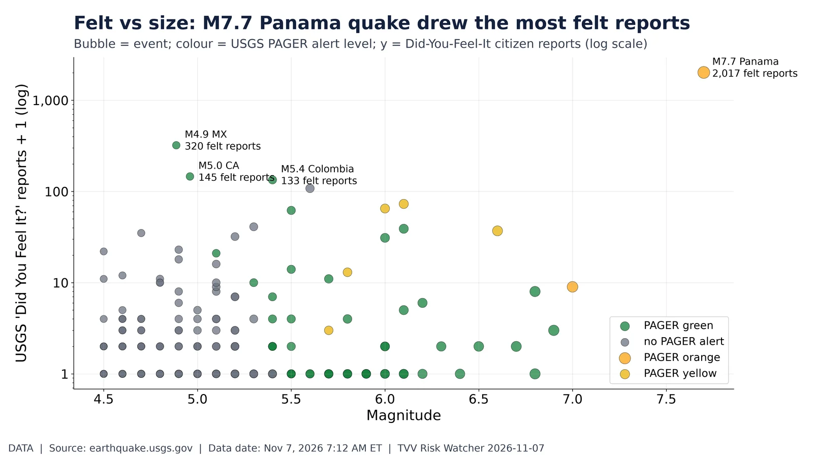
Felt vs size: M7.7 Panama quake drew the most felt reports. USGS M4.5+ past 30 days: 717 events, 119 with any DYFI felt reports; most-felt M7.7 10 km WSW of Pitaloza Arriba, Panama (2,017 reports). PAGER alerts: 74. USGS, Nov 7, 2026 7:10 AM ET. Source: https://earthquake.usgs.gov/earthquakes/feed/v1.0/summary/4.5_month.geojson
Satellite charging risk: GOES electrons peaked at 4,864 pfu this week. GOES >=2 MeV integral electron flux, 30-min medians: 7-day max 4,864 pfu (Nov 1 10 AM ET); latest 228 pfu vs 1,000 pfu alert. NOAA SWPC, Nov 7, 2026 7:10 AM ET. Source: https://www.swpc.noaa.gov/products/goes-electron-flux
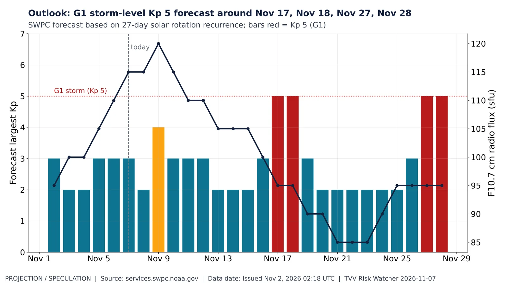
Outlook: G1 storm-level Kp 5 forecast around Nov 17, Nov 18, Nov 27, Nov 28. NOAA SWPC 27-day outlook issued Nov 2, 2026: largest Kp 5 on Nov 17, Nov 18, Nov 27, Nov 28; F10.7 peaks 120 sfu. Forecast, not observation. Nov 7, 2026 7:10 AM ET. Source: https://services.swpc.noaa.gov/text/27-day-outlook.txt
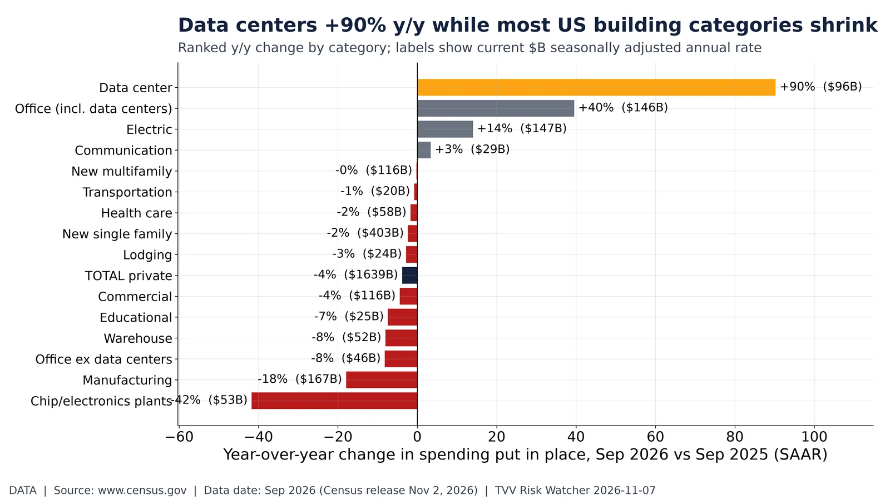
Data centers +90% y/y while most US building categories shrink. Census Value of Private Construction Put in Place, September 2026 (preliminary): data centers $96.5B SAAR, +90% y/y; total private -3.8%. Census, released Nov 2, 2026. Source: https://www.census.gov/construction/c30/xlsx/privsatime.xlsx
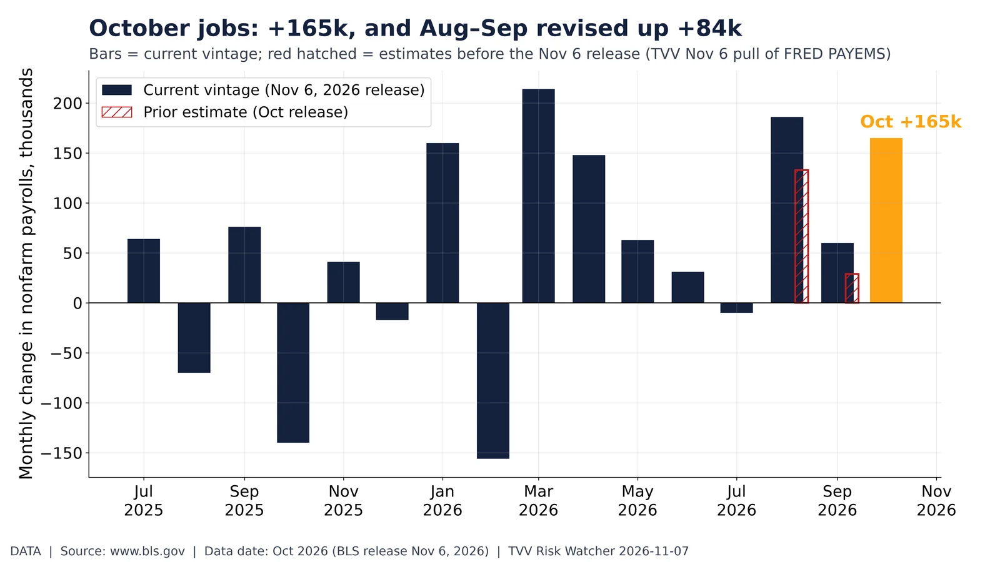
October jobs: +165k, and Aug–Sep revised up +84k. BLS Employment Situation (Nov 6, 2026): Oct nonfarm payrolls +165k; Sep revised +29k → +60k, Aug +133k → +186k; unemployment 4.1% (Sep 4.2%). FRED PAYEMS vintages Nov 6 vs prior. Source: https://www.bls.gov/news.release/empsit.nr0.htm
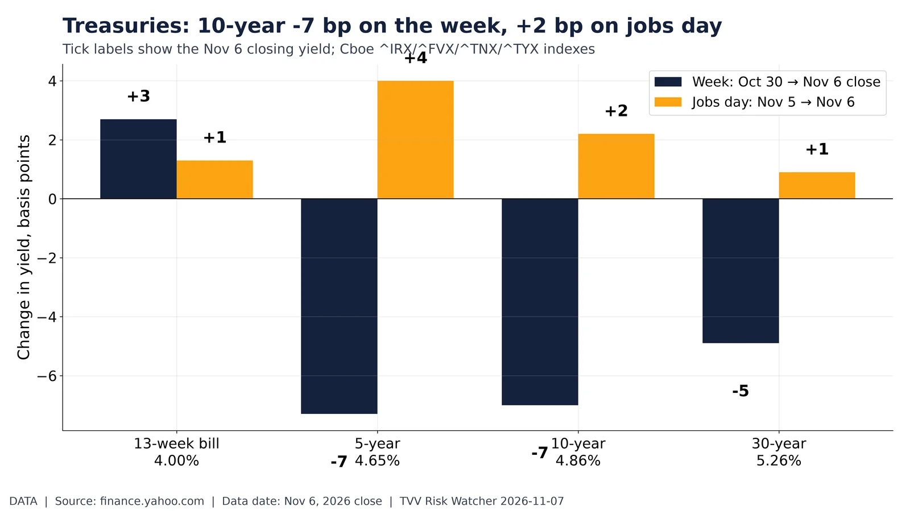
Treasuries: 10-year -7 bp on the week, +2 bp on jobs day. Cboe Treasury yield indexes (Yahoo): 10-year 4.86% (-7 bp week, +2 bp Nov 6); 30-year 5.26%; 13-week 4.00%. Yahoo, Nov 6, 2026 close. Source: https://finance.yahoo.com/quote/%5ETNX/
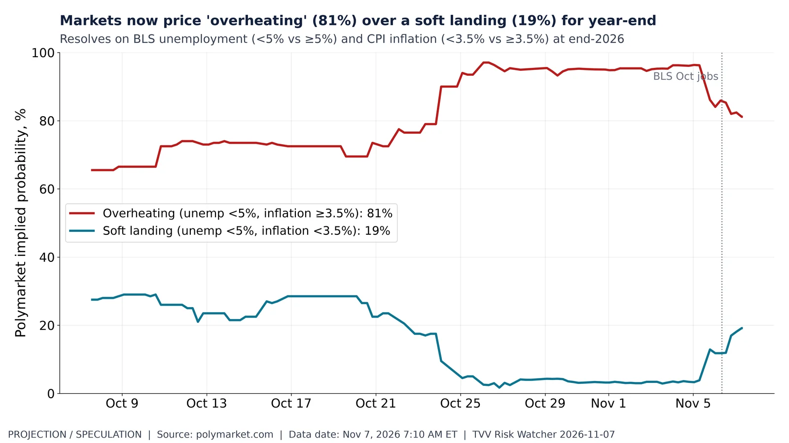
Markets now price 'overheating' (81%) over a soft landing (19%) for year-end. Polymarket 'US economic state at the end of 2026': Overheating 81% (from 66% Oct 8), Soft landing 19%; stagflation and slack ≤0.2%. Polymarket CLOB, Nov 7, 2026 7:10 AM ET. Source: https://polymarket.com/event/us-economic-state-at-the-end-of-2026
Commodities week: gold +4.5%, silver +5.5%, WTI -12.8% into Friday. Front-month futures, Oct 30 → Nov 6, 2026 close: gold +4.5% ($4,075), silver +5.5% ($51.80), WTI -12.8% ($90.83). Diamonds = prior week. Yahoo/CME-ICE, Nov 6, 2026 close. Source: https://finance.yahoo.com/quote/GC%3DF/
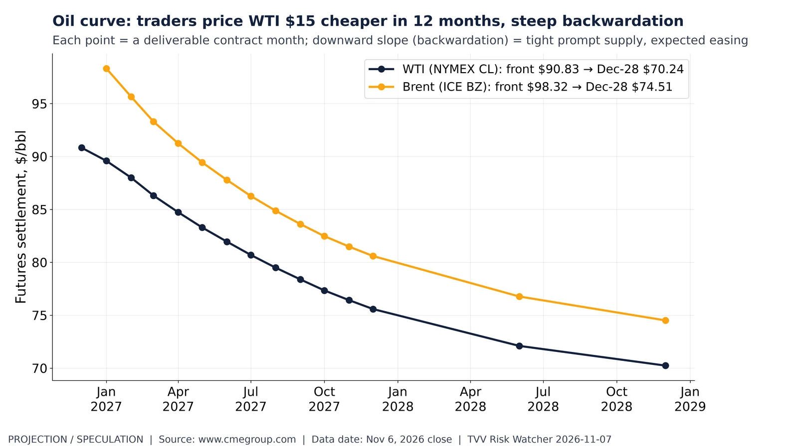
Oil curve: traders price WTI $15 cheaper in 12 months, steep backwardation. NYMEX WTI and ICE Brent futures by delivery month, Nov 6, 2026 settle: WTI Dec-26 $90.83, Dec-27 $75.58, Dec-28 $70.24. Futures curve = market-implied forward prices, not a forecast. Yahoo/CME, Nov 6, 2026 close. Source: https://www.cmegroup.com/markets/energy/crude-oil/light-sweet-crude.quotes.html
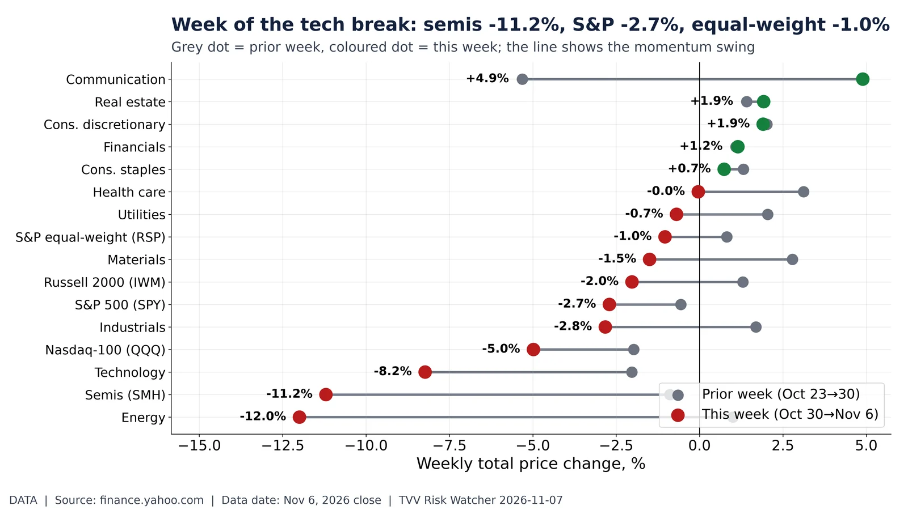
Week of the tech break: semis -11.2%, S&P -2.7%, equal-weight -1.0%. ETF weekly change Oct 30 → Nov 6, 2026 close vs prior week: SMH -11.2% (prior -0.9%), SPY -2.7% (prior -0.6%), RSP -1.0%. Best sector Communication. Yahoo, Nov 6, 2026 close. Source: https://finance.yahoo.com/quote/SPY/
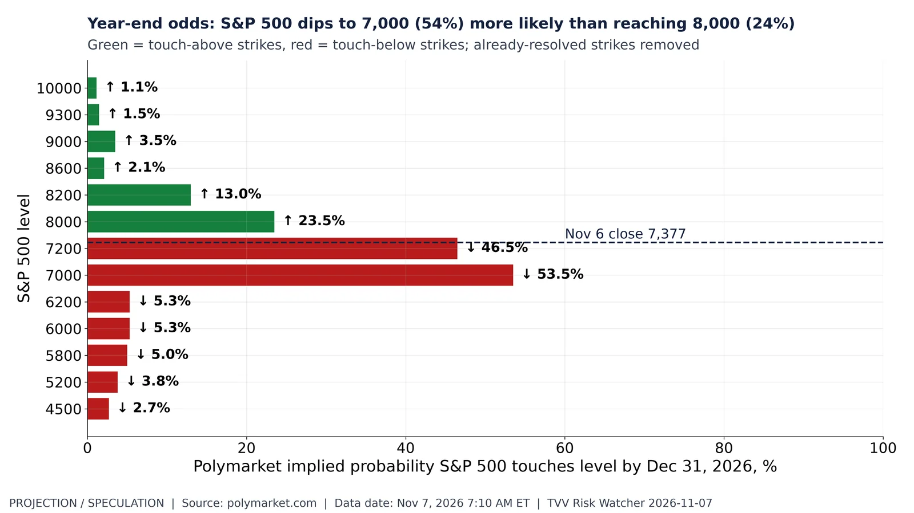
Year-end odds: S&P 500 dips to 7,000 (54%) more likely than reaching 8,000 (24%). Polymarket 'What will S&P 500 hit by end of December' (open strikes): ↓7,000 54%, ↑8,000 24%. S&P 500 closed 7,377 Nov 6 (-5.7% from post-Aug high 7,819). Nov 7, 2026 7:10 AM ET. Source: https://polymarket.com/event/spx-hit-dec-2026
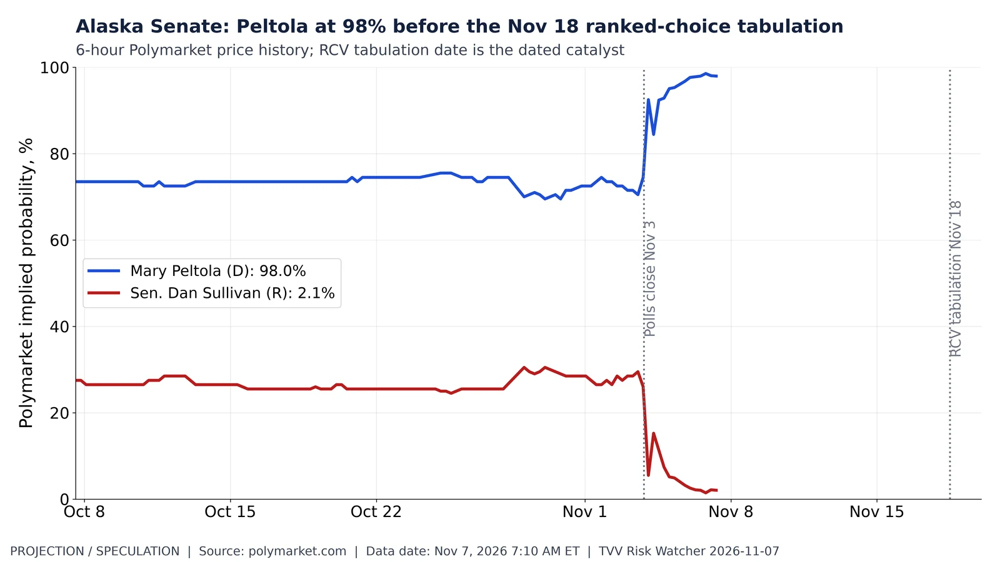
Alaska Senate: Peltola at 98% before the Nov 18 ranked-choice tabulation. Polymarket Alaska Senate Election Winner: Peltola 74% (Oct 8) → 98.0%; Sullivan 2.1%. RCV tabulation Nov 18 (Alaska Division of Elections). Polymarket CLOB, Nov 7, 2026 7:10 AM ET. Source: https://polymarket.com/event/alaska-senate-election-winner
Tech week in one grid: Nvidia -8.8%, Apple -0.7%. Daily % change Mon Nov 2 – Fri Nov 6, 2026 and week (Oct 30 → Nov 6 close): Nvidia -8.8%, QQQ -5.0%, SPY -2.7%; Thu Nov 5 is the selloff column. Yahoo, Nov 6, 2026 close. Source: https://finance.yahoo.com/quote/NVDA/
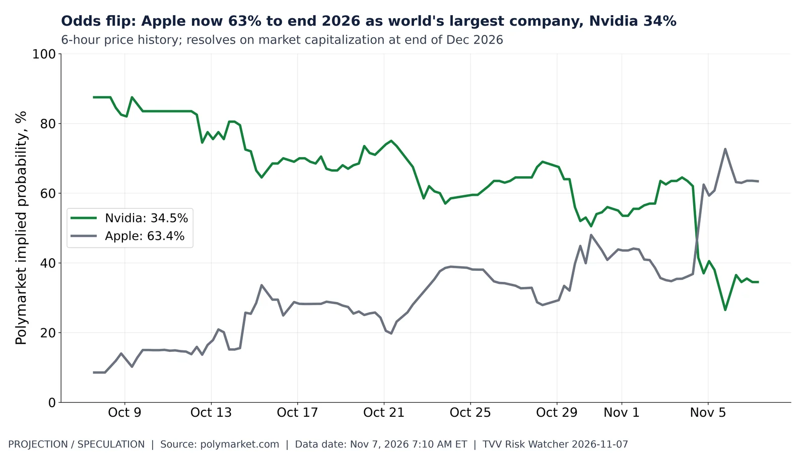
Odds flip: Apple now 63% to end 2026 as world's largest company, Nvidia 34%. Polymarket 'Largest Company end of December 2026': Nvidia 87.5% (Oct 8) → 34.5%; Apple 8.6% → 63.4%. Market volume ~$9.9M. Polymarket CLOB, Nov 7, 2026 7:10 AM ET. Source: https://polymarket.com/event/largest-company-end-of-december-2026
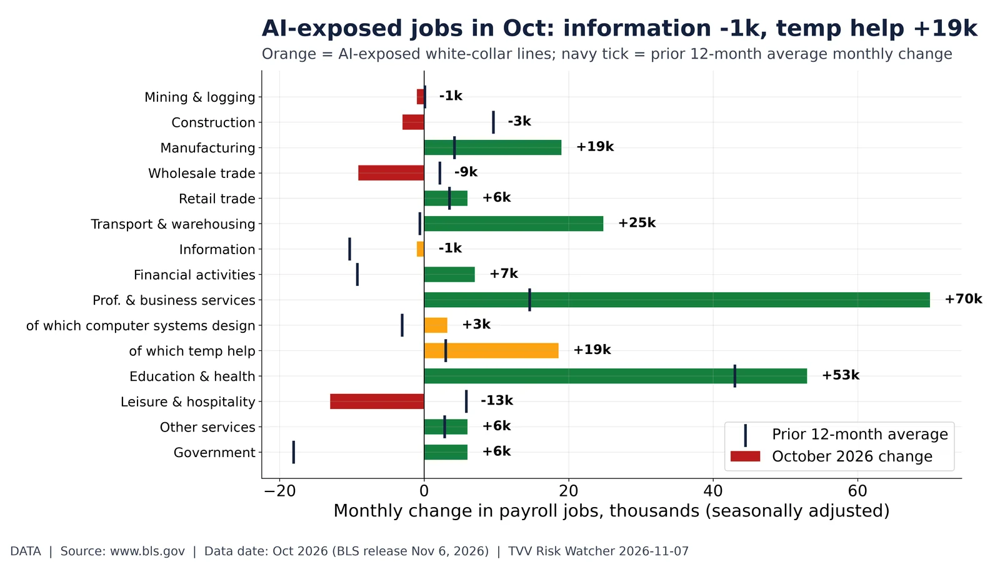
AI-exposed jobs in Oct: information -1k, temp help +19k. BLS CES October 2026 (Nov 6 release): information -1.0k (12-mo avg -10.3k), computer systems design +3.2k, temp help +18.6k; unemployment age 20–24 9.3% (Sep 9.9%). FRED/BLS. Source: https://www.bls.gov/news.release/empsit.t17.htm
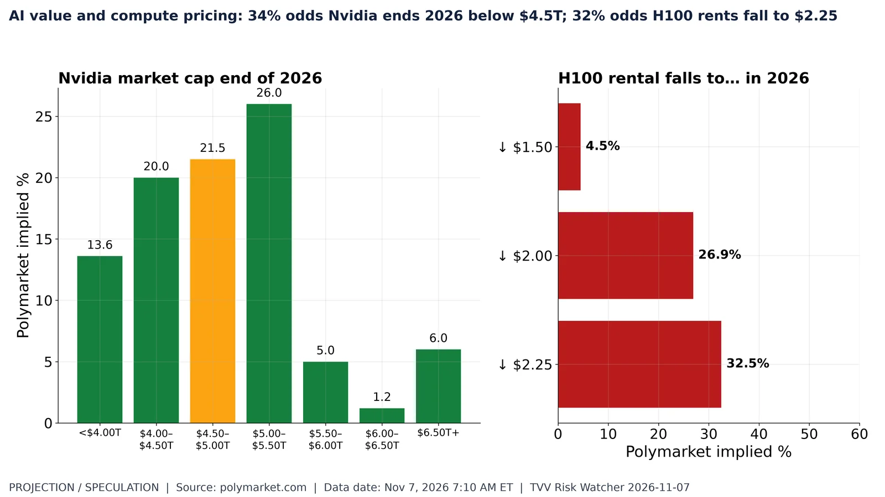
AI value and compute pricing: 34% odds Nvidia ends 2026 below $4.5T; 32% odds H100 rents fall to $2.25. Polymarket 'Nvidia's market cap end of 2026' buckets and 'GPU rental prices (H100) hit ___ in 2026' downside strikes (upside $2.75–$3.50 already hit). Nov 7, 2026 7:10 AM ET. Source: https://polymarket.com/event/nvidias-market-cap-end-of-2026